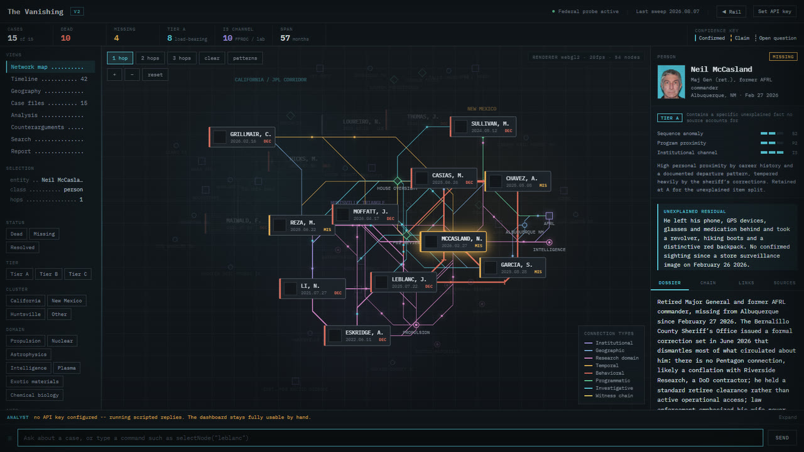
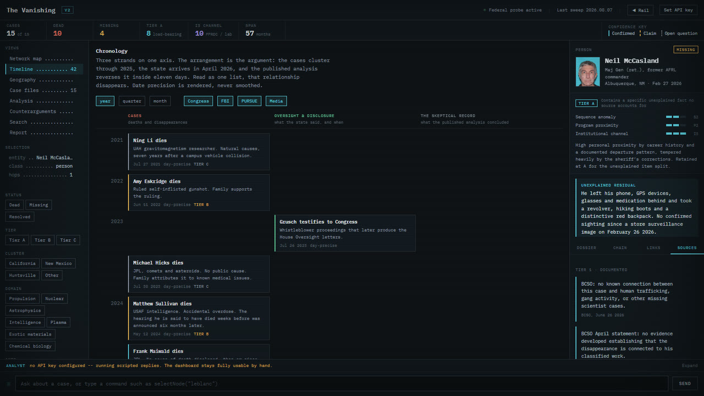
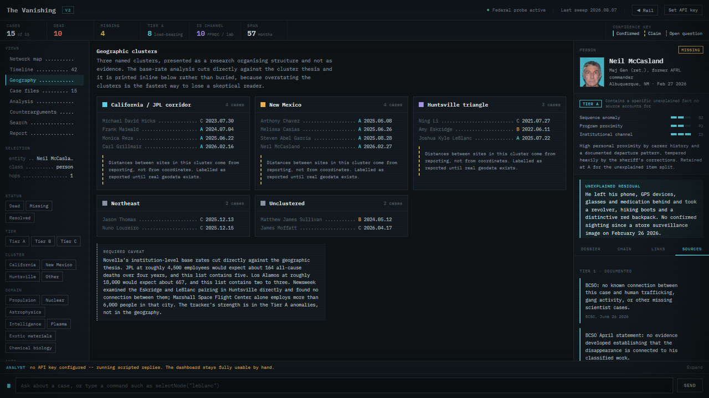
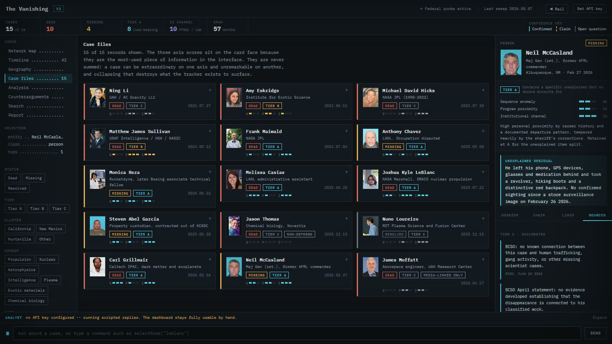
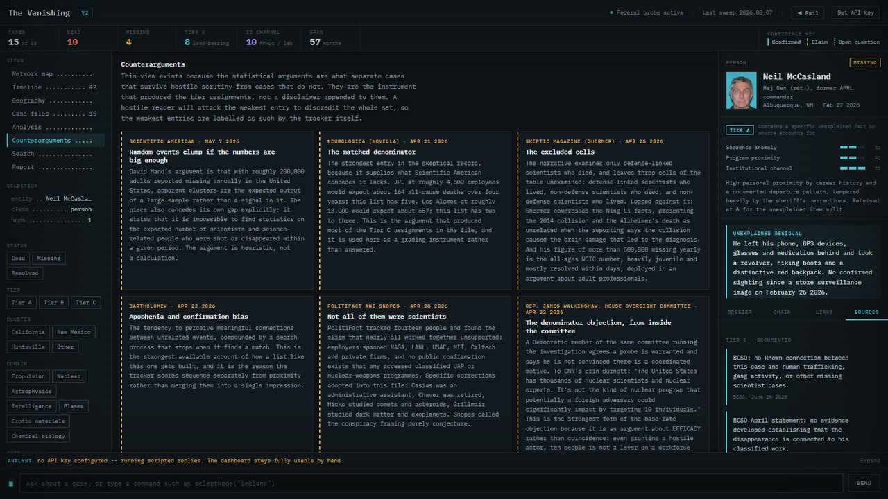

In development
The Vanishing
An interactive tracker of US scientists and defense-connected people who died or went missing between 2021 and 2026. Every case is built from public sources and links them.
- Cases
- 15
- Dead
- 10
- Missing
- 4
- Resolved
- 1
Before anything else
How to read this
These are real people, and some of their families are still waiting for answers. The tracker is built so that a skeptical reader can check every link in it.
- Public sources only. Every case is built from material already published: news reporting, official releases, court and agency records, documents released under FOIA, and public statements. Each claim carries its source. Home addresses and private contact details are left out even where reporting printed them.
- Inclusion is not a claim of foul play. A name on the board means the death or disappearance was publicly reported and fits the tracker's scope. It does not mean anyone was harmed by anyone. Five of the fifteen cases have a conventional explanation that holds, and they are labelled that way on purpose.
- Fact, claim and open question are kept apart. A confidence key on every page marks what is confirmed, what is only alleged, and what nobody knows.
- Families have spoken. Several have publicly asked that their losses not be treated as conspiracy material. Where they have, the tracker records what they said accurately and does not argue with it.
- Corrections are welcome. If something is wrong, out of date or should not be here, open an issue with the case name, what is wrong, and a public source if you have one. Requests from family members are handled first.
Network map
Fifteen cases on one board
The tracker holds ten deaths, four people still missing and one resolved case, between July 2021 and 2026. Many were named in the April 2026 House Oversight letters and the federal review that followed.
The network map puts people, institutions, programmes, places and research domains on one canvas. Click any of them and its dossier opens: narrative, chronology, the connections with a plain-language reason for each, and the sources. The first five connection types are derived by rule from the case records, so adding a case adds its connections without anyone drawing them. The last three are editorial and hand-sourced.

Timeline
The sequence, in order
The timeline lays out 42 dated entries on a single axis, case events beside the oversight and disclosure events around them, with year, quarter and month zoom. Dates are shown at the precision the sources give, no finer.
The tracker's idea is that an event which looks ordinary on its own may not look ordinary in sequence. The timeline is where that sequence can be read, and where it can be challenged.
Case files
Every case carries its own file
Each case card shows the three axis scores up front and opens into the full record. Blocks are labelled for what they are: an unexplained residual, where sources disagree, and claims that are unverified and deliberately not propagated into other cases.
Sources sit at the bottom of every file with a confidence tier. Across the fifteen cases the record cites 43 distinct linked sources: news reporting, fact checks, official and agency records, and documents released under FOIA.
Counterarguments
Graded against the skeptical record
The counterarguments view carries the skeptical reporting in full, not trimmed. It draws on Scientific American, Skeptic, NeuroLogica, Snopes and PolitiFact, and it is used to grade the cases rather than to rebut the board.
That is why the five cases with a conventional explanation stay in. They show the list is not curated to fit a story, and removing them would weaken the tracker.
Method
Three scores, never added up
Each case is scored 0 to 3 on three axes. They are never summed, because a case can be extraordinary on one axis and unremarkable on another, and a single number would hide that.
Sequence anomaly
How many independently documented, individually unexplained links form a chain?
Personal programme proximity
What sensitive access did this person personally hold?
Institutional channel
Does the employer have a documented history as a conduit for classified work?
Tier A requires an unexplained fact that no published source accounts for, plus S2 or higher, or P3, or I3. Tier B is unresolved with a prosaic reading available. Tier C has a conventional explanation that holds. The board currently holds 8 Tier A, 2 Tier B and 5 Tier C.
Gallery
More views




Behind the board
How it was made
The dashboard is built from data, not edited by hand. Case records, entities, the timeline and the graph live in the repository as JSON. A merge script assembles them and a build script renders the single HTML page.
A verification script defines what is shippable. It runs schema checks, a semantic diff against a frozen baseline so no claim can be removed or changed without a declared reason, and discovery checks that flag gaps, contested claims and sources that only repeat each other. Every check is itself tested against input it must reject.
The page is plain HTML, CSS and JavaScript, with a WebGPU renderer for the map's connection lines and WebGL2 and Canvas 2D fallbacks. The build and checks are Python. The research method is written down in the repository.
An optional analyst panel answers questions about the case file if you paste your own Anthropic API key. The key stays in your browser and goes only to api.anthropic.com. Without a key, everything still works by hand.
Credits
Sources and licences
| What | Who | Licence |
|---|---|---|
| Photographs of the fifteen people | Credited individually on each dossier and in the repository's photo notes: police and sheriff's departments via New Mexico DPS, Wakefield Police Department, Caltech IPAC, University of Arizona LPL, UAH, family obituary photographs (Legacy.com, Dignity Memorial), Wikimedia Commons | Each keeps its own terms; most are not public domain. Nuno Loureiro's portrait is CC BY-SA 4.0 (Wikimedia Commons). |
| Reporting and records | The outlets and agencies cited on each case, among them CNN, Los Angeles Times, NBC News, Boston Globe, PolitiFact, the House Oversight Committee, the LA County District Attorney and New Mexico DPS | Cited and linked, not reproduced |
| IBM Plex Mono and IBM Plex Sans | IBM, via Google Fonts | SIL Open Font License 1.1 |
| The Vanishing's own code | Stewart Gregerson | MIT |
The screenshots and clips on this page show the live dashboard as it is today, including the photographs and quoted source titles it displays.